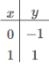

Definícia
Funkcie sú základným pojmom v matematike, ktorý sa vyskytuje v širokej škále matematických a vedných disciplín. Umožňujú nám lepšie pochopenie vzťahov a modelovania v rôznych oblastiach, od algebry až po analýzu a aplikovanú matematiku.
Funkcia predstavuje špeciálny druh vzťahu medzi dvoma množinami, nazývanými definičná množina a obor hodnôt. Základným znakom funkcie je, že každému prvku z definičnej množiny je priradený práve jeden prvok z oboru hodnôt.
Označenie
Funkcie sa obvykle označujú písmenom (zvyčajne f) a sú definované pomocou vzorca alebo pravidiel, ktoré určujú, ako je každý prvok definičnej množiny spojený s príslušným prvkom oboru hodnôt.
Príklad
f: R → R je funkcia definovaná pravidlom f(x)=2x+1. V tomto prípade je definičná množina všetkých reálnych čísel a obor hodnôt tiež všetky reálne čísla. Pre každé reálne číslo x je hodnota funkcie f(x) daná výrazom 2x+1.
Grafické zobrazenie
Graf funkcie poskytuje vizuálnu reprezentáciu, kde os x zobrazuje definičnú množinu a os y zobrazuje obor hodnôt. Pre náš príklad by graf funkcie f(x)=2x+1 bol priamka so sklonom 2 a y-nárezom 1.
Vlastnosti funkcií